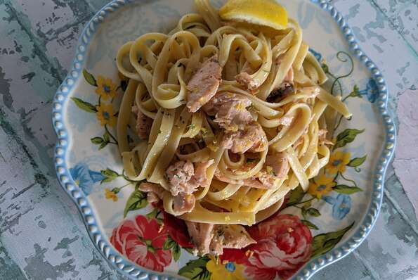

Baked Salmon

Description
A simple and easy meal combined with bright lemon and garlicky salmon on top
of a bed of pasta!
Ingredients:
- salt/black pepper to taste
- 1 (8 oz) salmon fillet
- 1 medium lemon, halved and divided
- 1 tablespoon garlic, minced
- 2 tablespoons butter
- 4 ounces dry fettuccine pasta
- 1/2 tablespoon dried parsley
Directions
- Preheat the oven to 390 degrees F(200 degrees C).
- Lightly salt and pepper salmon fillet on both sides,
and place in a 2-quart baking dish. Squeeze 1 lemon half over the salmon,
then sprinkle with minced garlic and 1/2 of the butter pieces.
- Bake in the preheated oven until salmon is cooked through and flakes easily with a fork,
15 minutes.
- Meanwhile, fill a large pot with lightly salted water and bring to a rolling boil.
Cook fettuccine at a boil until tender yet firm to the bite, about 8 minutes.
- When salmon is cooked, break apart into large chunks
- Add cooked pasta to the baking dish with the salmon. Drizzle pasta and salmon remaining butter
pieces. Zest the remaining lemon half and add to the dish, add parsley, salt, and pepper.